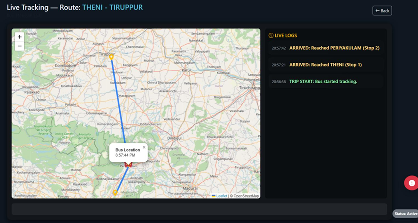
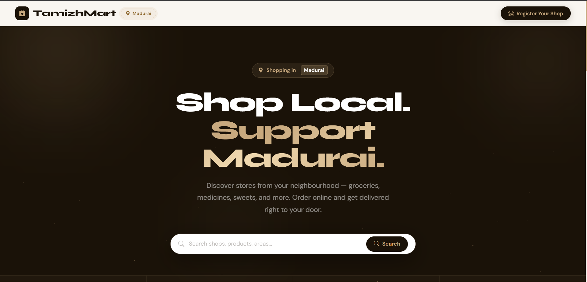

Build for real use
I focus on clear flows, useful features and dependable data.
Information Technology Student · Web Developer
I build practical web applications with PHP, MySQL and JavaScript, from live transit tracking to multi-tenant e-commerce platforms.
01 / ABOUT
I’m an Information Technology undergraduate at Erode Sengunthar Engineering College. I enjoy turning real problems into reliable web applications, especially projects involving APIs, databases and backend logic.
My recent work includes a live bus-tracking platform using mobile GPS and OpenStreetMap, and a multi-tenant commerce system with payments, dashboards and automated notifications.
I focus on clear flows, useful features and dependable data.
Each project is a chance to strengthen both code and judgment.
I debug patiently, ask better questions and refine the details.
02 / PROJECTS
Two full-stack applications and one learning-platform capability grounded in practical operations.

A real-time bus-tracking system that receives GPS coordinates from drivers’ mobile devices and shows live locations, routes and stop information on a public map.
View on GitHub ↗
An e-commerce platform with customer storefronts, shop-owner dashboards and a super-admin panel, including Razorpay payments and automated WhatsApp and email notifications.
Working knowledge of Moodle learning-management and ERP workflows, including course and content organization, user and role management, learner tracking, and support for day-to-day academic operations.
View on GitHub ↗03 / EDUCATION & LEARNING
Undergraduate
Erode Sengunthar Engineering College · Perundurai, Erode
Building a foundation in web technologies, database management, computer networks, artificial intelligence and software engineering.
Higher Secondary
Sri Valli Varadaraj Matriculation Higher Secondary School
October 2024
November 2024
04 / TOOLKIT
A practical toolkit for developing, testing and running modern web applications.
HTML, CSS, JavaScript, PHP, Java
MySQL, phpMyAdmin, CRUD, REST APIs, database management
Git, GitHub, Docker, AWS, VS Code, IntelliJ IDEA, XAMPP, Postman